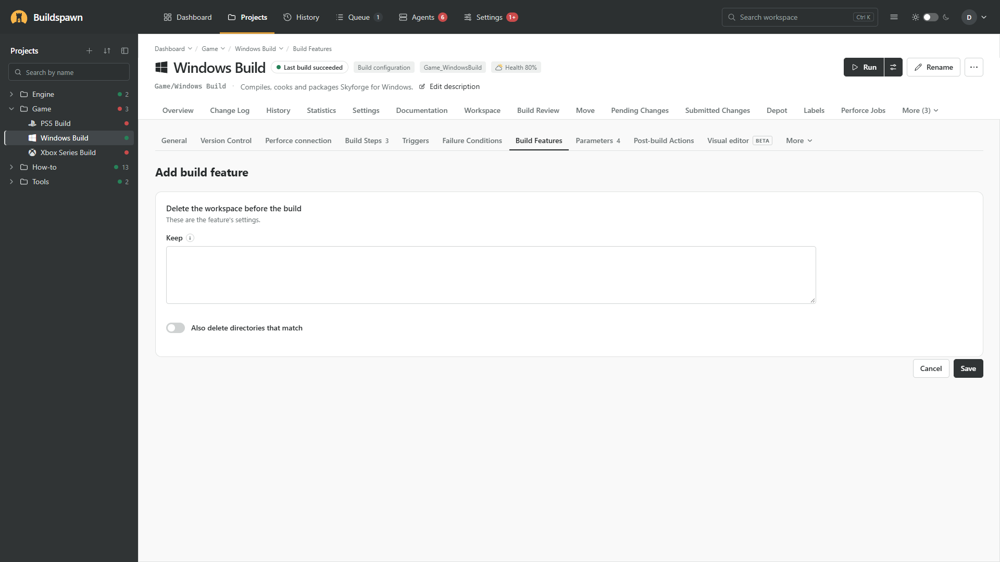

Delete the workspace before the build
Empties the workspace folder on the agent before the sources are fetched, so every build starts clean.
When to use it
Use it when old files cause strange results: stale cooked content, a half-finished Unity Library folder, or files that were deleted in version control but are still on disk. The price is time: every build fetches and rebuilds everything. If only some folders are slow to rebuild, keep them with the Keep field.

How to set it up
- Open the build configuration, click Settings, then Build Features. Click Add build feature and choose Delete the workspace before the build.
- In Keep, type one pattern per line for the files you want to keep, for example
Library/**. Leave it empty to delete everything. - Tick Also delete directories that match only if you want the matching folders themselves removed too.
- Click Save.
Every field
An Ant pattern is a path with wildcards: * matches any text in one folder name, ** matches any number of folders.
| Field | What it does | Default | Example |
|---|---|---|---|
| Keep | Files that stay. One Ant pattern per line, relative to the workspace. Empty keeps nothing. | Empty | Library/** |
| Also delete directories that match | Remove the directories that the patterns match, not only the files. | Off | On |
A worked example
The Unity Windows Build keeps its Library folder, because importing the project takes 25 minutes. It still needs a clean output folder. The studio sets Keep to Library/**. Everything else in the workspace, including old Builds/ output, is deleted before each build.
What you see when it runs
Deleting the workspace before the build, keeping Library/** Cleaning E:\ws\Game_UnityWindows ... Checking out from Perforce ...
When Keep is empty the line says Deleting the workspace before the build.
Problems and fixes
| Problem | What to do |
|---|---|
| The build is much slower | The workspace is fetched in full each time. Use Keep for folders that are expensive to make again. |
| A file I wanted to keep is gone | Check the pattern. It is relative to the workspace root and case matters on Linux and macOS. |
| Two builds fail on the same agent | Builds that share a workspace folder cannot run at the same time. Run them one at a time, or give each its own workspace. |